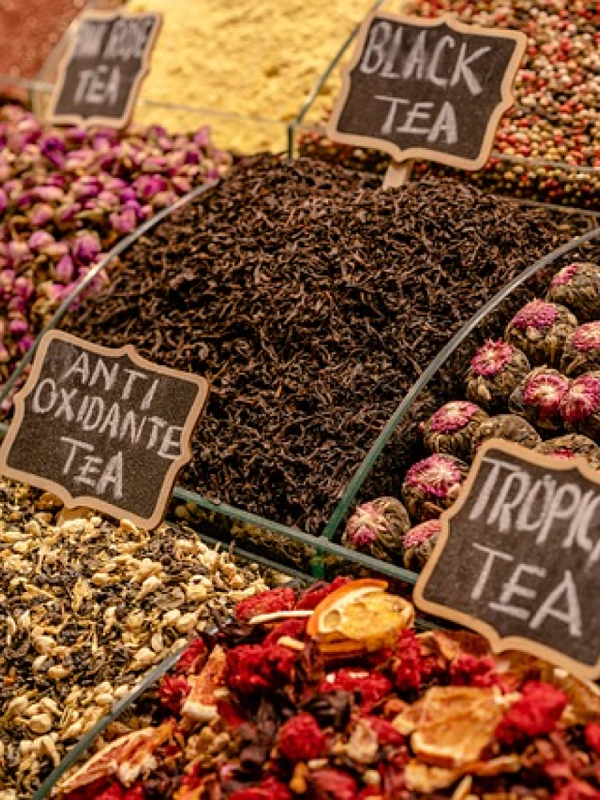
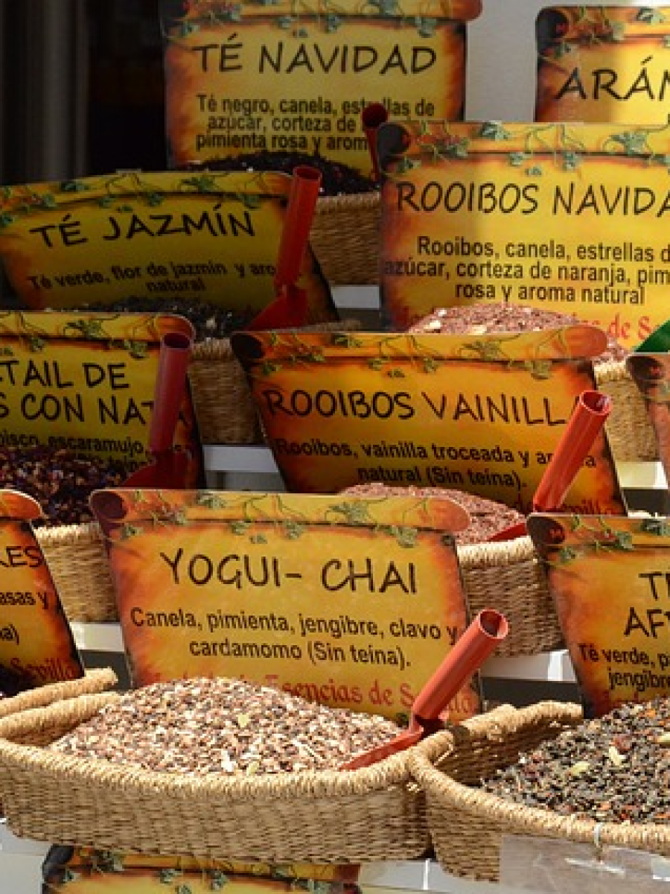
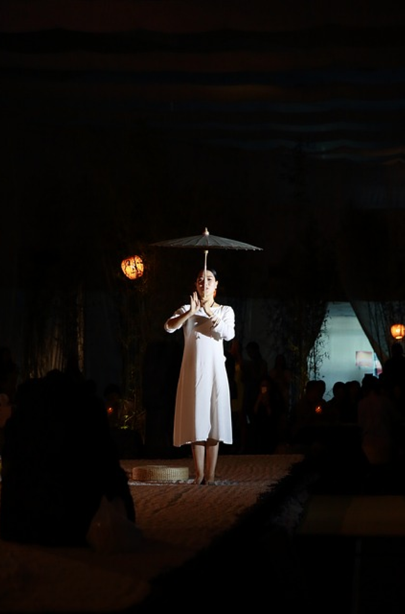

Il festival offre un'ampia varietà di esperienze per i visitatori, infatti gli ospiti possono degustare diversi tè pregiati e apprezzare i diversi sapori e aromi. Inoltre possono assistere a coinvolgenti dimostrazioni di preparazione del tè.
Per coloro che desiderano approfondire la cultura del tè, il festival offre una serie di stimolanti seminari. Inoltre, i partecipanti hanno la possibilità di acquistare tè di alta qualità e accessori correlati.
Festival del tè ad Hong Kong
Il Festival del Tè di Hong Kong è uno dei più grandi eventi del tè in Asia, infatti i partecipanti hanno l'opportunità di esplorare una vasta gamma di tè provenienti da diverse regioni della Cina e di tutto il mondo.
Le bancarelle colorate del Festival del Tè di Hong Kong sono uno degli elementi più affascinanti e invitanti dell'evento offrono un'ampia varietà di tè provenienti da diverse regioni della Cina e da ogni parte del mondo.


L'evento si svolge solitamente ad agosto presso il Centro Convenzioni ed Esposizioni di Hong Kong. Per partecipare, è possibile acquistare i biglietti online attraverso il sito web ufficiale dell'evento o presso i punti vendita designati.
